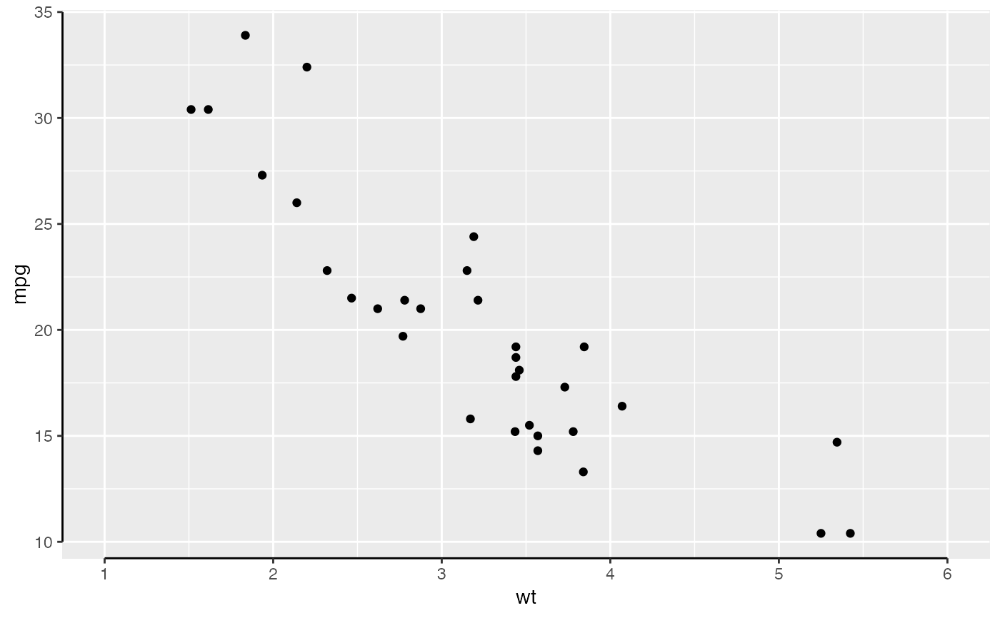
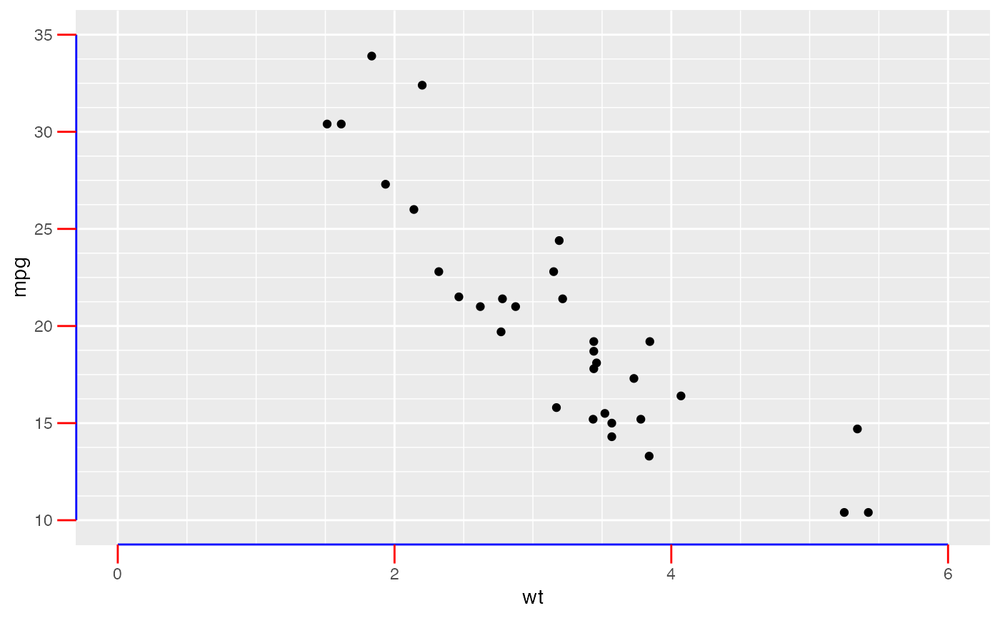

This guide draws the axis only as wide as the outermost tick marks, similar to offset axes from Prism.
guide_prism_offset( title = waiver(), check.overlap = FALSE, angle = NULL, n.dodge = 1, order = 0, position = waiver() )
| title | A character string or expression indicating a title of guide.
If |
|---|---|
| check.overlap | silently remove overlapping labels, (recursively) prioritizing the first, last, and middle labels. |
| angle | Compared to setting the angle in |
| n.dodge | The number of rows (for vertical axes) or columns (for horizontal axes) that should be used to render the labels. This is useful for displaying labels that would otherwise overlap. |
| order | Used to determine the order of the guides (left-to-right, top-to-bottom), if more than one guide must be drawn at the same location. |
| position | Where this guide should be drawn: one of top, bottom, left, or right. |
Returns a prism_offset guide class object.
Control the length of the axis by adjusting the breaks argument in
scale_(x|y)_continuous() or scale_(x|y)_discrete().
library(ggplot2) ## base plot base <- ggplot(mtcars, aes(x = wt, y = mpg)) + geom_point() + theme(axis.line = element_line(colour = "black")) ## use offset guide via scale_x/y_continuous base + scale_x_continuous( limits = c(1, 6), breaks = seq(1, 6, by = 1), guide = "prism_offset" ) + scale_y_continuous( guide = "prism_offset" )## use offset guide via guides argument base + guides(x = "prism_offset", y = "prism_offset") + scale_x_continuous( limits = c(1, 6), breaks = seq(1, 6, by = 1) )## change colour and tick length with the usual elements base + scale_x_continuous( limits = c(0, 6), minor_breaks = seq(0, 6, 0.5), guide = "prism_offset" ) + scale_y_continuous( limits = c(10, 35), minor_breaks = seq(10, 35, 1.25), guide = "prism_offset" ) + theme( axis.ticks.length = unit(10, "pt"), axis.ticks = element_line(colour = "red"), axis.line = element_line(colour = "blue") )